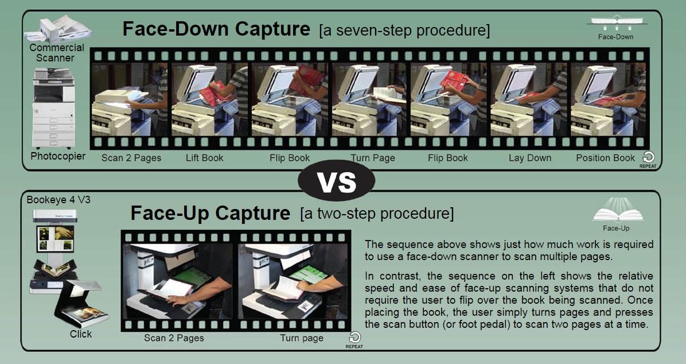

Your Choice: Scan Face-Down or Face-Up
Faster is also Easier
Face-up book scanning is far easier on both patrons and books and quite a bit faster than face-down scanning.
Scanning books face-up makes it much easier to keep track of what pages you've scanned. With KIC Click, Click Mini and other face-up scanners, books stay face up, so you can see what you're scanning as you scan it. This extra visibility eliminates the age old problem of skipping pages and scanning pages out of order which can occur with face-down scanners.
The following photo sequences show the reason that facedown scanning systems are typically 1/3 the speed of faceup systems. The book flipping necessary to scan a book on a face-down scanner like the KIC BookEdge is shown in the photo sequence below. It's a workout both for the book and the patron.
The ergonomic design of the face-up scanning sytems involves only the basic movement required to set a book down and turn a page.
KIC Fleet Management
Monitor Usage Statistics at a Glance
Control,update and monitor your KIC systems remotely. To better serve your patrons, it is important to know which KIC systems are used the most and at what times during the day and week, and which are used the least. All usage statistics can help you to determine the best KIC configuration for each site. And to make it easier to navigate from KIC to KIC system, KIC Fleet Manager allows you to select a particular KIC system via either of two methods: a map or a list.
With over ten years serving libraries, KIC is the most stable product available today. However, DLSG engineers incessantly work to improve KIC and support the growing changing digital world. DLSG offers improved software re- gularly, and in order to make it easier to deploy updates, KIC Fleet Manager lets you update KIC systems remotely. For example, a recently released feature lets you turn KIC systems on and off on demand or on a schedule set by a central control panel.